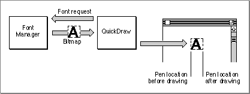

Legacy Document
Important: The information in this document is obsolete and should not be used for new development.
Important: The information in this document is obsolete and should not be used for new development.


Text Is Graphics
Your application draws graphic shapes on the Macintosh screen by making calls to QuickDraw, the graphics manager of Macintosh system software. The graphics components of QuickDraw are described in the chapter "QuickDraw," in Inside Macintosh: Imaging.Drawing text is fundamentally the same as drawing graphics. The application makes QuickDraw calls to write text to the screen or to a printer. Those parts of QuickDraw that are concerned specifically with drawing text are documented in the chapter "QuickDraw Text" in this book.
When QuickDraw draws text, it places bitmapped shapes on a display device. Those shapes are the forms of individual letters in a particular font. A font is a resource that contains a complete set of character representations in a particular typeface, such as Times
\xC6 or Geneva. Without a font, QuickDraw cannot draw text. When you ask QuickDraw to draw text, it draws it according to the settings of the window (specifically, of the current graphics port record) that you are drawing into. The text's screen location, font, size, color, and style are all implied by the current state of the graphics port; they are not explicit parameters of your text-drawing call.
For example, when QuickDraw draws a character, it draws it at the current pen position, the screen position at which drawing occurs, in the current window. The character's origin (usually its left edge) is placed with respect to that location, with the rest of the character extending to the right of the origin. After drawing, QuickDraw automatically updates the pen location by the width of the character, so that the next character drawn will be automatically placed the correct distance to the right of the first. See Figure 1-2.
Likewise, when QuickDraw draws a string of text, it keeps advancing the pen location as it draws, so that the current location ends up at the right end of the string. This left-to-right orientation of QuickDraw is fundamental, and applies whether or not the text being drawn is meant to be read left-to-right (such as English) or right-to-left (such as Arabic).
Figure 1-2 How QuickDraw draws text
 QuickDraw's text-measuring capabilities are as important as its drawing capabilities. In many cases, before you draw a line of text, you first need to know its length in pixels, so that you can correctly place it on the screen and be assured that it does not overrun
its allotted space. Pixels are screen dots, and are nominally equal to one point, or approximately 1/72 inch, in size. You often make two sets of QuickDraw calls when drawing a string; the first to measure it, and the second to actually draw it.The Font Manager supports QuickDraw by providing the character bitmaps that QuickDraw needs, in the typefaces, sizes, and styles (such as bold or italic) that QuickDraw requests. The Font Manager keeps track of all fonts available to an application. If QuickDraw requests a typeface that is not represented in the available fonts, the Font Manager substitutes one that is; if QuickDraw requests a size that is
not available, the Font Manager scales an available size and returns the bitmaps to QuickDraw; if QuickDraw requests a style that is not available, the Font Manager returns an unstyled set of bitmaps and QuickDraw applies a style to them (by slanting for italic, or darkening extra pixels for boldface, and so on). In general, the Font Manager does the calculations and creates the bitmaps; QuickDraw transfers those bitmaps
to the screen.Fonts are strongly language-dependent. A font is the manifestation of the character set--the body of meaningful characters--of a language or group of languages, called a writing system. Fonts also implement additional symbols and forms, such as ligatures, needed by that writing system. The Font Manager provides for fonts in many writing systems; fonts are identified by a numbering scheme with which the writing system of a font can be determined from its number.
Macintosh fonts come in two basic kinds: bitmapped and outline (such as TrueType). Each bitmapped font is a set of character bitmaps of a given typeface in a single size; each outline font is a set of templates from which bitmaps of any size can be generated. All Macintosh text-handling routines work with both types of fonts.
Fonts can also be classified by the sizes of the character sets they implement. The typical Macintosh fonts, suitable for most languages of the world, are called 1-byte fonts; each contains fewer than 256 characters. Fonts for some East Asian languages, however, need thousands of characters; they are called 2-byte fonts. The Macintosh text-handling routines can work with both 1-byte and 2-byte fonts, although special techniques
may be required for character handling with 2-byte fonts. Bitmapped and outline
fonts are described in the chapter "Font Manager" in this book and in TrueType Font Format Specification, available from APDA. For more information on how fonts are used on the Macintosh, see "Fonts" beginning on page 1-44, and "Font Handling" beginning on page 1-60.The text measuring and drawing routines in QuickDraw and the Text Utilities operate under certain assumptions, based principally on the fact that Macintosh system software was originally developed for the left-to-right Roman writing system of the English language, and that the system software provides line-layout, but not page-layout, capabilities. Remember these points:
- QuickDraw draws all text from left to right. Whether your text has a left-to-right or right-to-left line direction--the direction in which the text is read--QuickDraw places its left edge at the current location in your window and draws its characters in order from the leftmost to the rightmost character. QuickDraw and the Text Utilities provide routines that allow you to order and draw your text properly regardless of its line direction or directions.
- On a line of text, screen position is in terms of pixel offset from the left edge of the text-drawing area, regardless of the line direction of the text being drawn.
- The text-measuring routines in this book help you calculate and lay out individual lines; it is up to you to track where a line starts, both in terms of vertical screen position and in terms of offset in your text run.